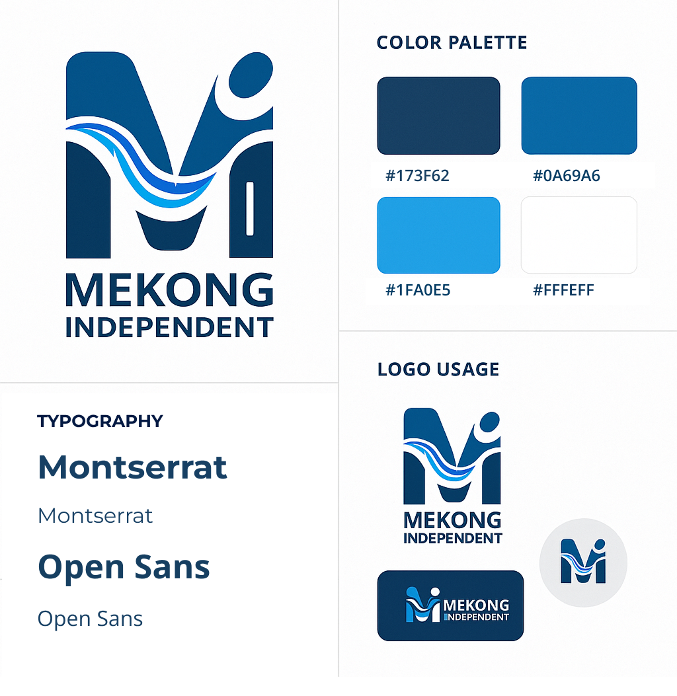
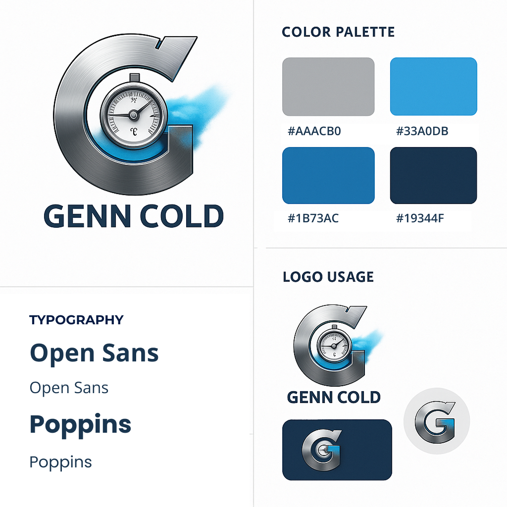

Logos - Crafting Distinctive Brand Identities
Logos are the visual cornerstone of a brand’s identity, capturing its essence in a single, memorable mark. A well-crafted logo not only sets a company apart but also reflects its values, mission, and personality at a glance. Through deliberate choices in color, typography, and symbolism, I design logos that build instant connection, trust, and recognition.
Tools I use: Adobe Illustrator, Photoshop, and InDesign for design and refinement; Figma for prototyping and system consistency; and Adobe Firefly or Midjourney for AI-assisted concept exploration.
Mekong Independent Logo Design
Client Overview
Mekong Independent is a non-profit news organization dedicated to providing credible, in-depth reporting across the Mekong region - covering issues of governance, the environment, and human rights. Their mission centers on empowering local voices and fostering transparency through independent journalism.
Tools:
Adobe Illustrator · Adobe Firefly (AI concept exploration) · Figma (mockups and responsive layout testing)
Deliverables
Logo Design · Brand Guidelines · Stationery Design
Final Design Presentation
The final logo design was presented to the client with a comprehensive brand guidelines document, detailing the logo's usage, color palette, and typography. The presentation emphasized the logo's alignment with Mekong Independent's mission and values, showcasing its potential to enhance the organization's visual identity.
Design Objectives
- • Create a modern, trustworthy, and regionally resonant logo that captures both the spirit of independence and the vitality of the Mekong River.
- • The design needed to work across digital and print platforms while reflecting journalistic integrity and accessibility.
- • Develop a visual identity that resonates with both local and international audiences - a unifying symbol of life and resilience across Southeast Asia.
Concept Development
The concept centers around the letter “M”, stylized to represent:
- • The Mekong River - illustrated through dynamic wave forms flowing across the letter, symbolizing movement, connection, and continuous flow of information.
- • Independence and human voice - the circular element atop the “M” abstractly forms a human figure reaching upward, embodying freedom of expression and hope.
- • Unity through diversity - the layered blue tones represent the six nations of the Mekong region, each distinct yet interconnected through the same current of shared stories and struggles.
AI-Enhanced Workflow
The visual concept was supported by AI-assisted image generation to experiment with fluidity and form. AI tools were used to explore river-like motion and gradient flow patterns before refining the final composition in Adobe Illustrator. The result merges human design intuition with AI-generated inspiration.
Outcome
The final logo presents a bold, contemporary identity that is instantly recognizable and adaptable for multiple applications — from website mastheads to press materials and social media avatars. It embodies Mekong Independent’s mission: to deliver independent journalism that flows freely - like the river itself.
Genn Cold Logo Design
Client Overview
Genn Cold provides advanced cold storage solutions serving three core sectors - data centers, food logistics, and pharmaceutical preservation. The company’s mission is to maintain integrity, efficiency, and reliability across environments where precision temperature control is critical to performance and safety.
Tools:
Adobe Illustrator · Adobe Photoshop · Midjourney / Firefly (AI concept exploration) · Figma (brand application mockups)
Deliverables
Logo Design · Brand Guidelines · Stationery Design
Final Design Presentation
The final logo design was presented to the client with a comprehensive brand guidelines document, detailing the logo's usage, color palette, and typography. The presentation emphasized the logo's alignment with Genn Cold's mission and values, showcasing its potential to enhance the company's visual identity.
Design Objective
The challenge was to design a unified, modern identity that could represent the cutting-edge technology and cross-industry scope of Genn Cold. The logo needed to convey:
- • Precision and control (data-driven, measurable cooling)
- • Clean, reliable engineering (high performance and stability)
- • Universal cold chain expertise (serving tech, food, and life sciences)
Concept Development
The design centers around the letter “G”, stylized as a mechanical gauge to symbolize control and calibration key elements in cold storage management.
- • The circular dial inside the “G” represents a temperature gauge, reinforcing Genn Cold’s focus on monitoring and regulation.
- • The brushed metal texture conveys industrial precision and durability, while the blue vapor effect visually translates the idea of cooling, airflow, and temperature flow.
- • The inner dial’s numerical reference to “20°C” hints at temperature precision and monitoring standards across different storage environments.
Design Execution
- • Typography: A geometric sans-serif font was chosen for supporting applications, complementing the mechanical precision of the logomark.
- • Material Finish: The brushed-metal look aligns with industrial cooling systems and high-end refrigeration units, while the blue mist effect suggests active cold flow.
AI tools were utilized to generate texture and lighting effects, which were then refined manually to ensure clarity and scalability across various sizes and formats.
Outcome
The final logo delivers a sleek, professional identity that effectively communicates Genn Cold’s expertise in precision cooling solutions. It is versatile for use across digital platforms, print materials, and branded equipment, reinforcing the company’s position as a leader in cold storage technology.